Analytic Geometry and Nonlinear Systems
Circles and Parabolas
Conic Sections
Parabolas, circles, ellipses, and hyperbolas form a group of curves known as the conic sections, because they are the result of intersecting a cone with a plane.
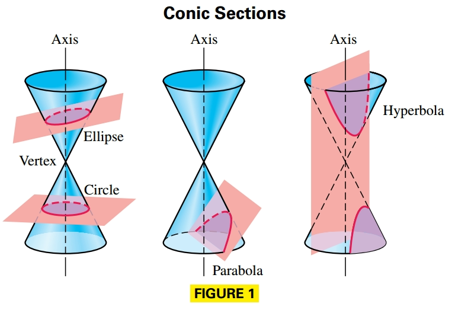
Circle
A circle is a set of points in a plane that are equidistant from a fixed point. The distance is called the radius of the circle, and the fixed point is called the center.
Suppose a circle has center $(h, k)$ and radius $r > 0$. Then the distance between the center $(h, k)$ and any point $(x, y)$ on the circle must equal $r$. Thus, an equation of the circle is as follows:
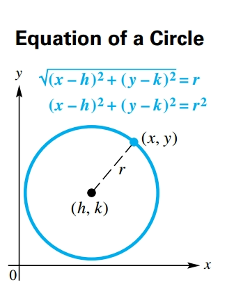
$$ \begin{aligned} \sqrt{(x - h)^2 + (y - k)^2} = r \end{aligned} $$$$ \begin{aligned} (x - h)^2 + (y - k)^2 = r^2 \end{aligned} $$Therefore the center–radius form of the equation of a circle with center $(h, k)$ and radius $r$ is:
$$ \begin{aligned} (x - h)^2 + (y - k)^2 = r^2 \end{aligned} $$Notice that a circle is the graph of a relation that is not a function.
A circle with center $(0, 0)$ and radius $r$ has equation:
$$ \begin{aligned} x^2 + y^2 = r^2 \end{aligned} $$General Form of the Equation of a Circle
For real numbers $c$, $d$, and $e$, the equation:
$$ \begin{aligned} x^2 + y^2 + cx + dy + e = 0 \end{aligned} $$can have a graph that is a circle, that is a point, or that is empty (contains no points.)
Starting with an equation in this general form, we can work in reverse by completing the square to get an equation of the form:
$$ \begin{aligned} (x - h)^2 + (y - k)^2 = m \text{ for some } m \end{aligned} $$There are three possibilities for the graph, based on the value of $m$:
- If $m > 0$, then $r^2 = m$, and the equation represents a circle with radius $\sqrt{m}$.
- If $m = 0$, the equation represents the single point $(h, k)$.
- If $m < 0$, no points satisfy the equation and the graph is empty.
Parabola
A parabola is a set of points in a plane equidistant from a fixed point and a fixed line. The fixed point is called the focus, and the fixed line the directrix, of the parabola.
We can find an equation of a parabola from the preceding definition. Let the directrix be the line $y = -c$ and the focus be the point $F$ with coordinates $(0, c)$. Given a point $P$ on the parabola, with coordinates $(x, y)$, using the distance formula gives the following result:
$$ \begin{aligned} d(P, F) = d(P, D) \end{aligned} $$$$ \begin{aligned} \sqrt{(x - 0)^2 + (y - c)^2} = \sqrt{(x - x)^2 + [y - (-c)]^2} \end{aligned} $$$$ \begin{aligned} x^2 + (y - c)^2 = [y +c]^2 \end{aligned} $$$$ \begin{aligned} x^2 + (y - c)^2 = (y + c)^2 \end{aligned} $$$$ \begin{aligned} x^2 + y^2 + c^2 - 2cy = y^2 + c^2 + 2cy \end{aligned} $$$$ \begin{aligned} x^2 = 4cy \end{aligned} $$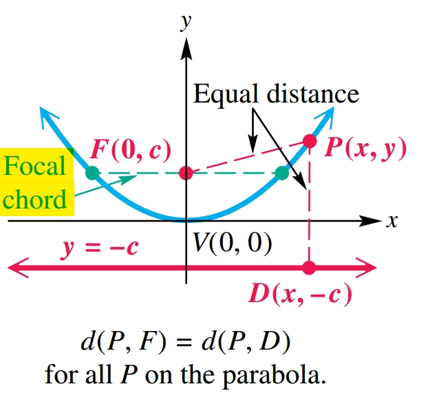
The focal chord through the focus and perpendicular to the axis of symmetry of a parabola is called the latus rectum, and has length $|4c|$.
To see this, note in the previous image that the endpoints of the chord are $(-x, c)$ and $(x, c)$. Let $y = c$ in the equation of the parabola and solve for $x$.
$$ \begin{aligned} x^2 = 4cy \end{aligned} $$$$ \begin{aligned} x^2 = 4c^2 \end{aligned} $$$$ \begin{aligned} x = |2c| \end{aligned} $$The length of half the focal chord is |2c| (from x = 0 to x = 2c or x = -2c) , so its full length is |4c|.
Parabola with a Horizontal Axis and Vertex $(0, 0)$
The parabola with focus $(c, 0)$ and directrix $x = -c$ has equation:
$$ \begin{aligned} y^2 = 4cx \end{aligned} $$The parabola has vertex $(0, 0)$, horizontal axis $y = 0$, and opens to the right if $c > 0$ or to the left if $c < 0$.
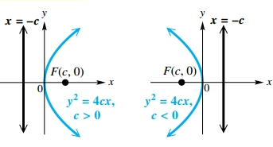
Notice that the graph of a parabola with a horizontal axis is not a function.
Equation Forms for Translated Parabolas
A parabola with vertex $(h, k)$ has an equation of the form:
Vertical axis:
$$ \begin{aligned} (x - h)^2 = 4c(y - k) \end{aligned} $$Horizontal axis:
$$ \begin{aligned} (y - k)^2 = 4c(x - h) \end{aligned} $$where the focus is a distance $|c|$ from the vertex:
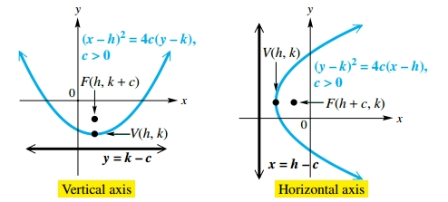
Ellipses and Hyperbolas
Ellipse
An ellipse is the set of all points in a plane, the sum of whose distances from two fixed points is constant. Each fixed point is called a focus (plural, foci) of the ellipse.
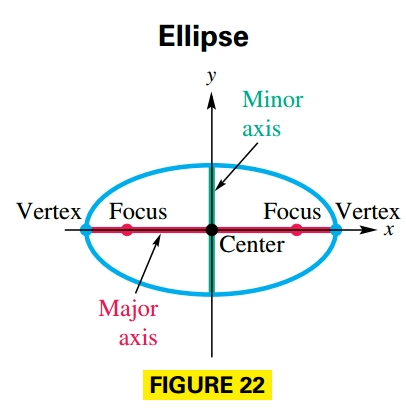
An ellipse has two axes of symmetry: the major axis (the longer one) and the minor axis (the shorter one). The foci are always located on the major axis. The midpoint of the major axis is the center of the ellipse, and the endpoints of the major axis are the vertices of the ellipse.
A chord through a focus and perpendicular to the major axis is called a latus rectum. The graph of an ellipse is not the graph of a function.
Given an ellipse with center at the origin, foci $F(c, 0)$ and $F′(-c, 0)$, and vertices $V(a, 0)$ and $V′(-a, 0)$. From the previous image we know that the distance from $V$ to $F$ is $a - c$ and the distance from $V$ to $F′$ is $a + c$. The sum of these distances is $2a$. Since $V$ is on the ellipse, all othe points must satisfy this distance, such that for any point $P(x, y)$ on the ellipse:
$$ \begin{aligned} d(P, F) + d(P, F') = 2a \end{aligned} $$$$ \begin{aligned} \sqrt{(x - c)^2 + y^2} + \sqrt{(x + c)^2 + y^2} = 2a \end{aligned} $$$$ \begin{aligned} \sqrt{(x - c)^2 + y^2} = 2a - \sqrt{(x + c)^2 + y^2} \end{aligned} $$We now square each side:
$$ \begin{aligned} (x - c)^2 + y^2 = 4a^2 - 4a\sqrt{(x + c)^2 + y^2} + (x + c)^2 + y^2 \end{aligned} $$$$ \begin{aligned} x^2 + c^2 - 2xc + y^2 = 4a^2 - 4a\sqrt{(x + c)^2 + y^2} + x^2 + c^2 + 2xc + y^2 \end{aligned} $$$$ \begin{aligned}
- 4xc = 4a^2 - 4a\sqrt{(x + c)^2 + y^2} \end{aligned} $$
$$ \begin{aligned}
- xc = a^2 - a\sqrt{(x + c)^2 + y^2} \end{aligned} $$
We square both sides again:
$$ \begin{aligned} (xc + a^2)^2 = a^2\left((x + c)^2 + y^2\right) \end{aligned} $$$$ \begin{aligned} x^2c^2 + a^4 + 2xca^2 = a^2\left(x^2 + c^2 + 2xc + y^2\right) \end{aligned} $$$$ \begin{aligned} x^2c^2 + a^4 + 2xca^2 = a^2x^2 + a^2c^2 + 2xca^2 + a^2y^2 \end{aligned} $$$$ \begin{aligned} x^2c^2 + a^4 = a^2x^2 + a^2c^2 + a^2y^2 \end{aligned} $$$$ \begin{aligned} x^2c^2 - a^2x^2 - a^2y^2 = - a^4 + a^2c^2 \end{aligned} $$$$ \begin{aligned} x^2(c^2 - a^2)- a^2y^2 = a^2 (-a^2 + c^2) \end{aligned} $$We multiply both sides by $-1$:
$$ \begin{aligned} x^2(a^2 - c^2) + a^2y^2 = a^2 (a^2 - c^2) \end{aligned} $$We divide both sides by $a^2(a^2 - c^2)$:
$$ \begin{aligned} \frac{x^2}{a^2} + \frac{y^2}{(a^2 - c^2)} = 1 \end{aligned} $$Which gives us the standard form equation for the ellipse with center on the origin, vertices $(\pm a, 0)$ and foci $(\pm c, 0)$.
Since $B(0, b)$ is on the ellipse, then:
$$ \begin{aligned} d(B, F) + d(B + F') = 2a \end{aligned} $$$$ \begin{aligned} \sqrt{(-c)^2 + b^2} + \sqrt{c^2 + b^2} = 2a \end{aligned} $$$$ \begin{aligned} 2\sqrt{c^2 + b^2} = 2a \end{aligned} $$We square both sides
$$ \begin{aligned} 4(c^2 + b^2) = 4a^2 \end{aligned} $$$$ \begin{aligned} c^2 + b^2 = a^2 \end{aligned} $$$$ \begin{aligned} b^2 = a^2 - c^2 \end{aligned} $$Therefore, by sustuting on the ellipse formula we obtain:
$$ \begin{aligned} \frac{x^2}{a^2} + \frac{y^2}{b^2} = 1 \end{aligned} $$Standard Forms of Equations for Ellipses
The ellipse with center at the origin and equation:
$$ \begin{aligned} \frac{x^2}{a^2} + \frac{y^2}{b^2} = 1, (a > b > 0) \end{aligned} $$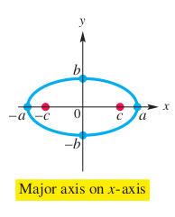
has vertices $(\pm a, 0)$, endpoints of the minor axis $(0, \pm b)$ and foci $(\pm c, 0)$ where $c^2 = a^2 - b^2$
The ellipse with center at the origin and equation
$$ \begin{aligned} \frac{x^2}{b^2} + \frac{y^2}{a^2} = 1, (a > b > 0) \end{aligned} $$

has vertices $(0, \pm a)$, endpoints of the minor axis $(\pm b, 0)$ and foci $(0, \pm c)$ where $c^2 = a^2 - b^2$
Translations of Ellipses
An ellipse with center at $(h, k)$ where $b^2 = a^2 - c^2$ with $a > b > 0$ and $c > 0$ satisfies one of the following equations:
- Major axis: horizontal, foci $(h \pm c, k)$ and vertices $(h \pm a, k)$:
- Major axis: vertical, foci $(h, k \pm c)$ and vertices $(h, k \pm a)$:
Hyperbola
A hyperbola is the set of all points in a plane such that the absolute value of the difference of the distances from two fixed points is constant. The two fixed points are called the foci of the hyperbola.

Suppose a hyperbola has center at the origin and foci at $F’(- c, 0)$ and $F(c, 0)$. The midpoint of the segment $F′F$ is the center of the hyperbola, and the points $V’(- a, 0)$ and $V(a, 0)$ are the vertices of the hyperbola. The line segment V’V is the transverse axis of the hyperbola.
A chord through a focus and perpendicular to an extension of the transverse axis is a latus rectum.
Standard Forms of Equations for Hyperbolas
The hyperbola with center at the origin and equation
$$ \begin{aligned} \frac{x^2}{a^2} - \frac{y^2}{b^2} = 1 \end{aligned} $$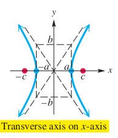
has vertices $(\pm a, 0)$, asymptotes $y = \pm \frac{b}{a}x$ and foci $(\pm c, 0)$ where $c^2 = a^2 + b^2$.
The hyperbola with center at the origin and equation
$$ \begin{aligned} \frac{y^2}{a^2} - \frac{x^2}{b^2} = 1 \end{aligned} $$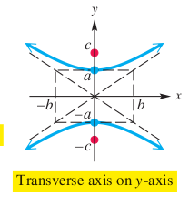
has vertices $(0, \pm a)$, asymptotes $y = \pm \frac{a}{b}x$ and foci $(0, \pm c)$ where $c^2 = a^2 + b^2$.
To explain the concept of asymptotes, we can start with the first equation for a hyperbola, where the foci are on the x-axis, and solve for $y$:
$$ \begin{aligned} \frac{x^2}{a^2} - \frac{y^2}{b^2} = 1 \end{aligned} $$$$ \begin{aligned} \frac{y^2}{b^2} = \frac{x^2}{a^2} - 1 \end{aligned} $$$$ \begin{aligned} \frac{y^2}{b^2} = \frac{x^2 - a^2}{a^2} \end{aligned} $$$$ \begin{aligned} \frac{y}{b} = \pm \frac{1}{a} \sqrt{x^2 - a^2} \end{aligned} $$$$ \begin{aligned} y = \pm \frac{b}{a} \sqrt{x^2 - a^2} \end{aligned} $$$$ \begin{aligned} y = \pm \frac{b}{a} \frac{x}{x} \sqrt{x^2 - a^2} \end{aligned} $$$$ \begin{aligned} y = \pm \frac{b}{a} x \sqrt{\frac{x^2 - a^2}{x^2}} \end{aligned} $$$$ \begin{aligned} y = \pm \frac{b}{a} x \sqrt{\frac{x^2}{x^2} - \frac{a^2}{x^2}} \end{aligned} $$$$ \begin{aligned} y = \pm \frac{b}{a} x \sqrt{1 - \frac{a^2}{x^2}} \end{aligned} $$So when $x \rightarrow \infty$ we know that $\frac{a^2}{x^2} \rightarrow 0$ and thus:
$$ \begin{aligned} y = \pm \frac{b}{a} x \sqrt{1} \end{aligned} $$$$ \begin{aligned} y = \pm \frac{b}{a} x \end{aligned} $$Which defines the asymptotes of the hyperbola. The lines are the extended diagonals of the rectangle whose vertices are $(a, b)$, $(- a, b)$, $(a, - b)$, and $(- a, - b)$. This rectangle is called the fundamental rectangle of the hyperbola.
If the foci are on the y-axis the hyperbola is defined as follows:
$$ \begin{aligned} y = \pm \frac{a}{b} x \end{aligned} $$Translations of Hyperbolas
A hyperbola with center $(h, k)$, where $c^2 = a^2 + b^2$ is defined in one of two ways:
- Traverse axis is horizontal, vertices are $(h \pm a, k)$, foci are $(h \pm c, k)$ and asymptotes are $y = \pm \frac{b}{a}(x - h) + k$
- Traverse axis is verticsl, vertices are $(k, h \pm a)$, foci are $(k, h \pm c)$ and asymptotes are $y = \pm \frac{a}{b}(x - h) + k$
The Conic Sections and Nonlinear Systems
Characteristics
The conic sections in this chapter have equations that can be written in the form:
$$ \begin{aligned} Ax^2 + Dx + Cy^2 + Ey + F = 0 \end{aligned} $$where either $A$ or $C$ must be nonzero.
The special characteristics of each conic section are summarizeed in the following table.
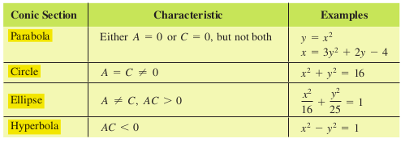
The chart summarizes our work with conic sections:
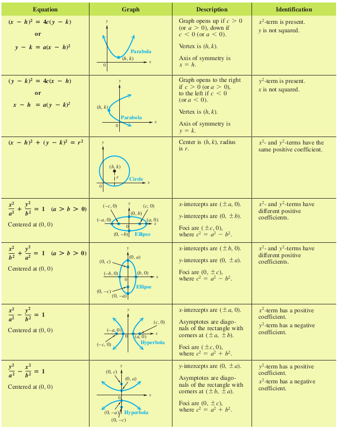
Eccentricity
A conic is the set of all points $P(x, y)$ in a plane such that the ratio of the distance from $P$ to a fixed point and the distance from $P$ to a fixed line is constant.
The constant ratio is called the ecccentricity of the conic, written $e$.
Parabola
If the conic is a parabola, then by definition, the distances $d(P, F)$ and $d(P, D)$ are equal, thus every parabola has eccentricity $1$.
Ellipse
For an ellipse, eccentricity is a measure of its “roundness”. The constant ratio in the definition is $e = \frac{c}{a}$, where $c$ is the distance from the center of the figure to a focus and $a$ is the distance from the center to a vertex.
By the definition of an ellipse, $a^2 > b^2$ and $c = \sqrt{a^2 - b^2}$. Thus, for the ellipse:
$$ \begin{aligned} 0 < c < a \end{aligned} $$Divide by $a$:
$$ \begin{aligned} 0 < \frac{c}{a} < 1 \end{aligned} $$Where $e = \frac{c}{a}$:
$$ \begin{aligned} 0 < e < 1 \end{aligned} $$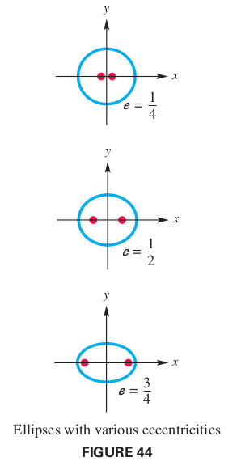
Circle
In the circle the foci coincide with the center such that $a = b$ and $c = \sqrt{a^2 - b^2} = 0$ and therefore $e = \frac{c}{a} = 0$.
Hyperbola
The hyperbola also has eccentricity $e = \frac{c}{a}$. By definition $c = \sqrt{a^2 + b^2} > a$, so:
$$ \begin{aligned} 0 < a < c \end{aligned} $$Divide by $a$:
$$ \begin{aligned} 0 < 1 < \frac{a}{c} \end{aligned} $$$$ \begin{aligned} 0 < 1 < e \end{aligned} $$Therefore $e > 1$. Such that narrow hyperbolas have $e$ near $1$ and wide hyperbolas have a large value of $e$.

Nonlinear Systems
A nonlinear system of equations can have any number of solutions.
Parametric Equations
Graphing a Parabola Defined Parametrically
Graph the plane curve $x = t^2, y = 2t + 3$ for $t \in [-3, 3]$.
Make a table of corresponding values of $t$, $x$, and $y$ over the domain of $t$.
| $t$ | $x$ | $y$ |
|---|---|---|
| $-3$ | $9$ | $-3$ |
| $-2$ | $4$ | $-1$ |
| $-1$ | $1$ | $1$ |
| $0$ | $0$ | $3$ |
| $1$ | $1$ | $5$ |
| $2$ | $4$ | $7$ |
| $3$ | $9$ | $9$ |
Then plot the points.

To find an equivalent rectangular equation, we eliminate the parameter $t$.
$$ \begin{aligned} y = 2t + 3 \end{aligned} $$$$ \begin{aligned} y - 3 = 2t \end{aligned} $$$$ \begin{aligned} \frac{y - 3}{2} = t \end{aligned} $$Now we substitute the result in the first equation $x = t^2$:
$$ \begin{aligned} x = t^2 = \left(\frac{y - 3}{2}\right)^2 = \frac{(y - 3)^2}{4} = \frac{1}{4}(y-3)^2 \end{aligned} $$This is indeed an equation of a horizontal parabola that opens to the right.
Because $t$ is in $[3, -3]$, $x$ is in $[3, 0]$, and $y$ is in $[-3, 9]$. The rectangular equation must be given with its restricted domain as:
$$ \begin{aligned} x = \frac{1}{4}(y-3)^2, \text{ for } x \in [0, 9] \end{aligned} $$